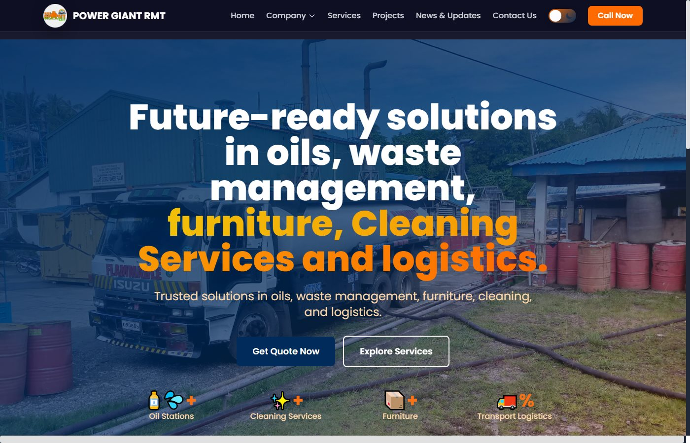
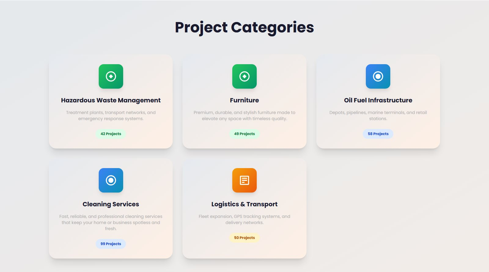
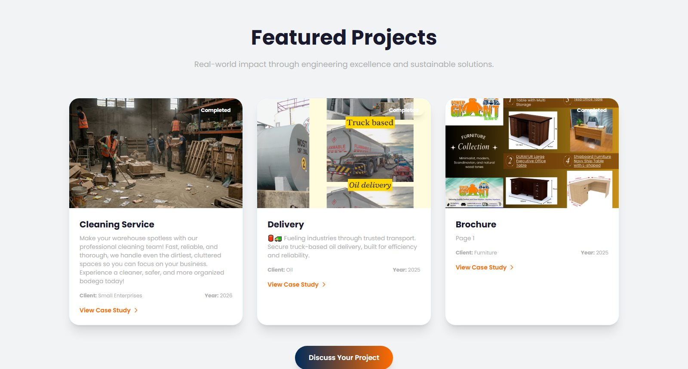

Case Study · 002
Power Giant RMT

The problem
Power Giant RMT is a diversified service company in the Philippines — palm and coconut oil supply, hazardous waste management, professional cleaning, furniture, and nationwide logistics. Five very different service lines needed one credible online home where commercial clients could understand the offering and request a quotation fast.
What I built
I handled the backend of the site as a project-based developer, working alongside the team responsible for the frontend design:
- Backend functionality in PHP + MySQL — the data and logic behind the service catalog, projects, and news sections.
- Quote & contact handling — the "Get Quote Now" flow that turns visitors into leads for the sales team.
- Live deployment — shipped the system to production hosting and kept it running.
- Client change requests — implemented requirements and system improvements as the company's needs evolved.


The result
A corporate site that treats "request a quote" as the product: every service line funnels to contact, compliance credentials are one click away, and the company can update projects and news itself. The backend runs on standard PHP hosting the client already owns — cheap to operate and easy to maintain.